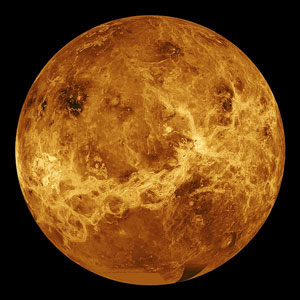

|
O Sistema Solar é constituído por oito planetas principais, são eles: Mercurio, Venus, Terra, Marte, Júpiter, Saturno, Urano e Netuno.
Venus é o segundo planeta do Sistema Solar em ordem de distância a partir do Sol. Recebeu seu nome em homenagem à deusa romana do amor e da beleza Vénus, equivalente a Afrodite. Depois da Lua, é o objeto mais brilhante do céu noturno, atingindo uma magnitude aparente de -4,6, o suficiente para produzir sombras. |
| Venus | |||||||||||
|---|---|---|---|---|---|---|---|---|---|---|---|
|  |
|
Fonte wikipedia